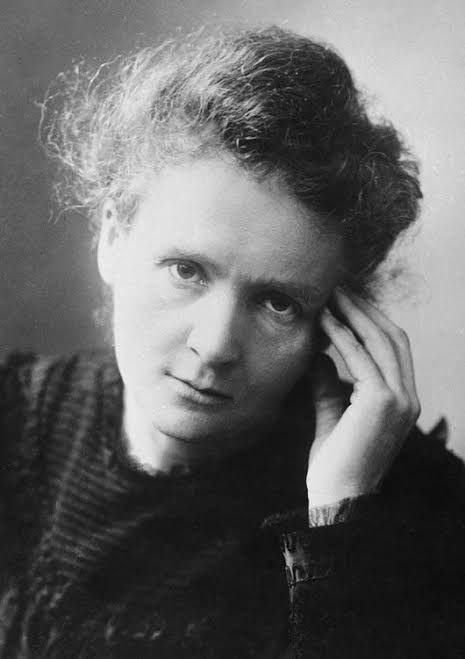
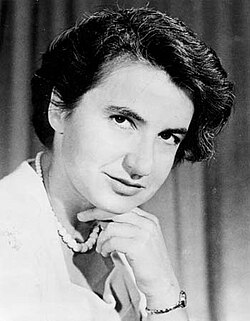
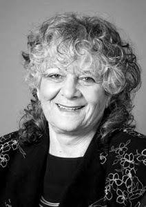
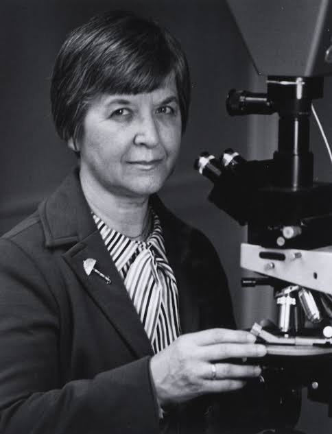
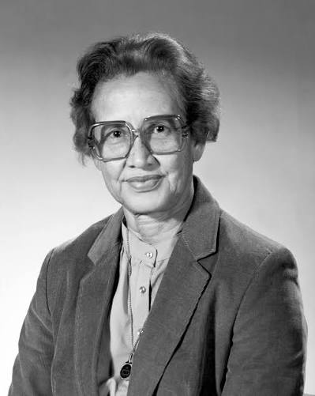
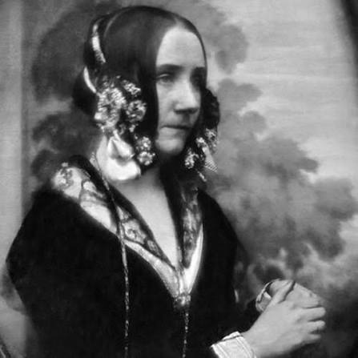

Cientistas em Destaque

Marie Curie
Descobriu os elementos rádio e polônio e realizou pesquisas pioneiras sobre radioatividade.

Rosalind Franklin
Suas pesquisas com raios X ajudaram a revelar a estrutura do DNA.

Ada Yonath
Estudou a estrutura dos ribossomos e recebeu o Nobel de Química.

Stephanie Kwolek
Criadora do Kevlar, material resistente usado em diversas tecnologias.

Bertha Lutz
Cientista brasileira, bióloga e pesquisadora que contribuiu para o desenvolvimento científico no Brasil.

Katherine Johnson
Cientista da NASA que realizou cálculos essenciais para missões espaciais.

Ada Lovelace
Considerada a primeira programadora da história, unindo matemática e tecnologia.